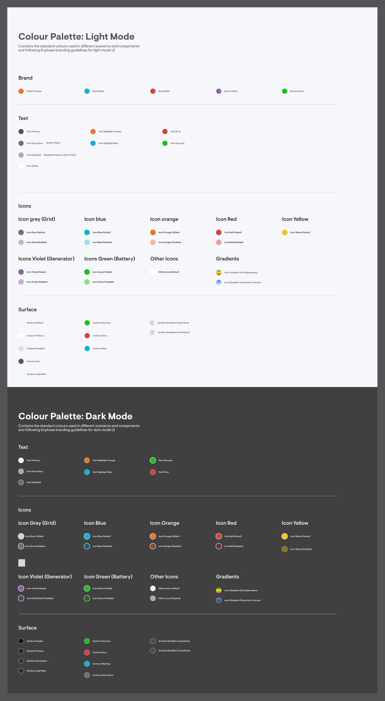
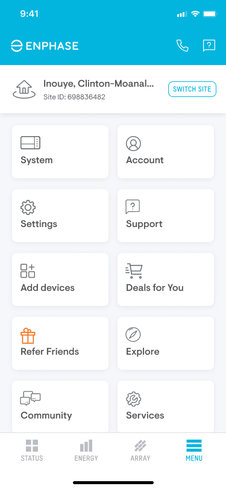
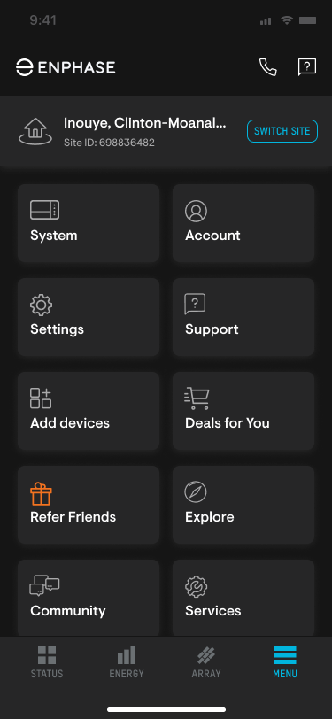
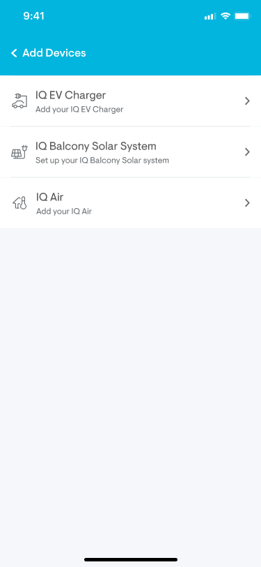
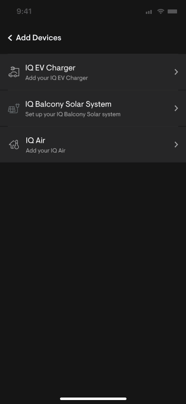
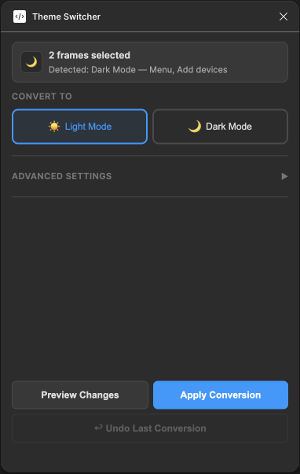
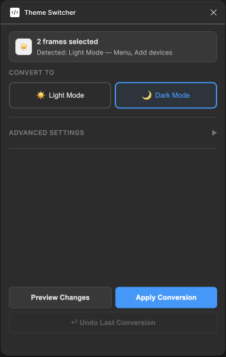

Enphase's mobile design system had a comprehensive colour palette for both light and dark modes, with clearly defined mapping guidelines — which light colour becomes which dark colour. However, the system didn't use design tokens or variables, making automatic light-to-dark conversion impossible natively in Figma.
Every time a screen needed a dark mode variant, designers had to manually swap every colour — backgrounds, text, icons, surfaces — layer by layer. This was tedious, error-prone, and incredibly time-consuming.

The design team spent an estimated 4 hours every week manually converting screens from light mode to dark mode. With no token system in place, every conversion meant hunting through layers and swapping colours one by one — a process that was slow, inconsistent, and frustrating.
I built a Figma plugin that takes context from the design system's colour palette — the exact light-to-dark mapping guidelines — and applies them to any selected screen. The plugin detects the current mode of a screen and offers to convert it to the other mode, swapping every colour accurately in one click.
What used to take a designer 30+ minutes per screen now takes 30 seconds for the entire flow — regardless of how many screens are selected.




The Theme Switcher plugin detects the current mode of selected frames and lets you convert them in one click.


The plugin follows a straightforward pipeline: read the design system's colour mapping, traverse the selected frames, detect the current mode, and swap every matching colour to its counterpart.
| Input | Any selected frame(s) in Figma |
| Colour Source | Design system colour palette (light & dark mode mappings) |
| Detection | Auto-detects light or dark mode based on surface colours |
| Scope | Fills, strokes, text, icons, gradients, surfaces |
| Output | Converted screen in the opposite mode |
| Speed | ~30 seconds total, regardless of number of screens |
The Dark Mode Generator didn't just save time — it changed how the team thought about design tooling. By automating a painful bottleneck, it proved that even without a token system, smart tooling can bridge the gap.